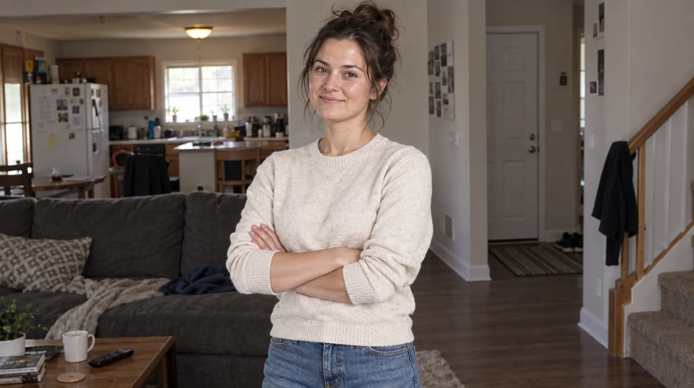
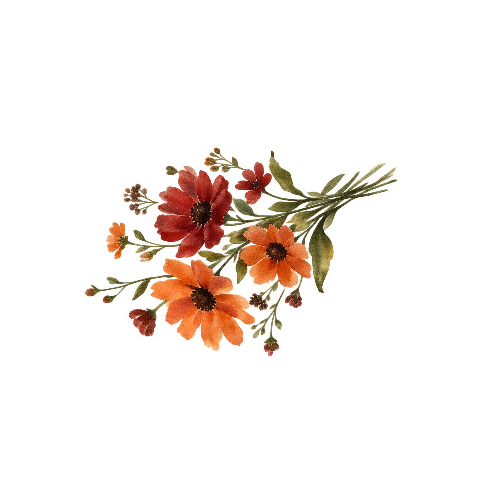
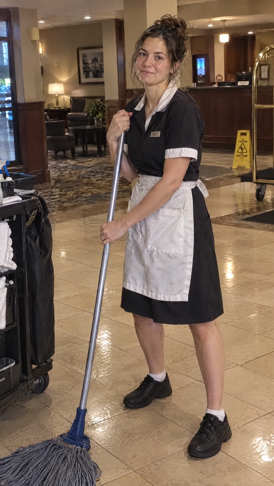
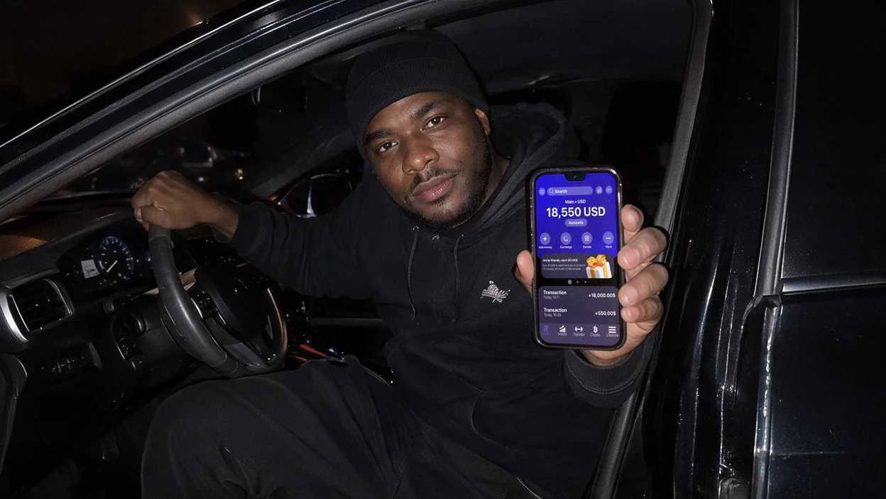
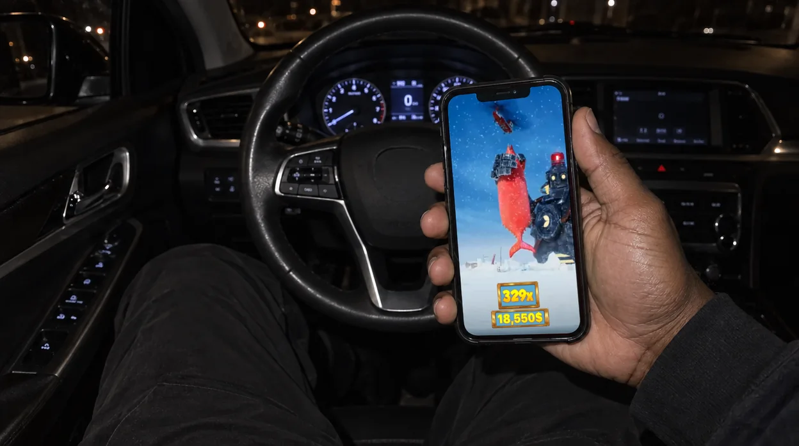
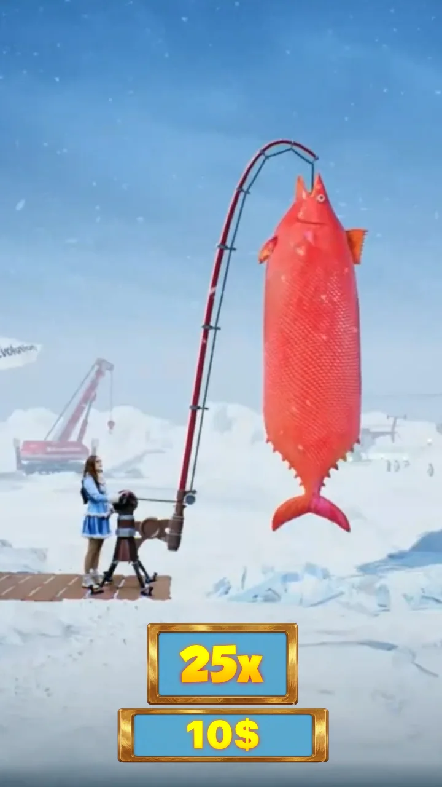
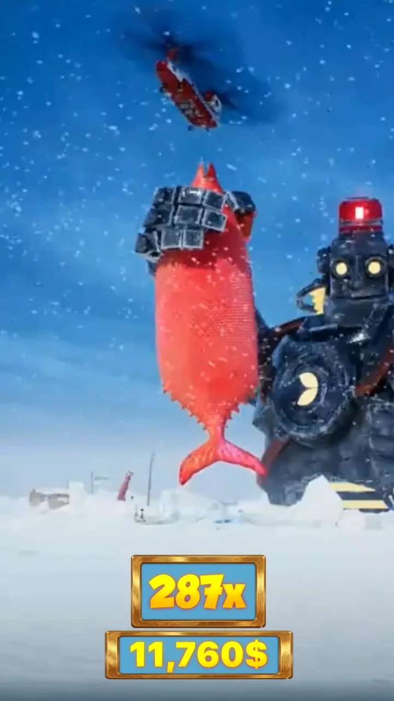
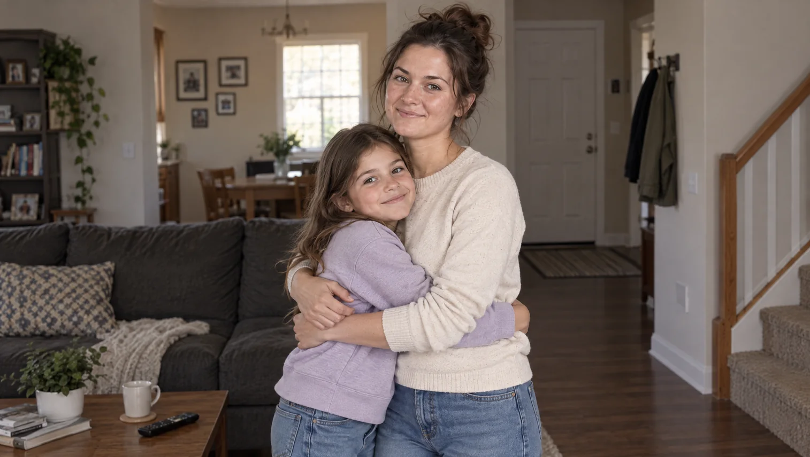

When I saw 11,760$ on my screen...
When I saw 11,760$ on my screen, my hands started shaking so badly that I almost dropped my phone. I bit my lip, closed my eyes, then opened them again — the number was still there. My name is Elina Rose, I’m 31 years old, and I’m used to believing that miracles don’t happen in life. But that evening, a miracle knocked on the door of my old, broken phone.


For the past six years, I worked as a hotel cleaner.
Three shifts a week, sometimes six, with no days off. No right to get sick. No room for mistakes. Other people’s rooms, other people’s beds, other people’s dirty towels. I washed the floors, changed the sheets, cleaned the bathrooms, and sometimes cried in the mop closet when no one was watching. My children saw me exhausted, confused, and empty.
I’m divorced. I’m raising two teenagers — a 12-year-old son and a 11-year-old daughter. My ex-husband pays for food, but it barely covers school expenses. I can’t even remember the last time I bought something for myself. Even a coffee at a café had become a luxury.
Rent. Electricity bills. My daughter’s school debt. Microloans I took out to pay off previous microloans.
It was a spiral. Every month I would sit down with a calculator and realize that, once again, I wouldn’t make it to the end of the month. We ate pasta with oil three times a week. I sold my gold earrings — the only thing I had left from my grandmother.

One evening, after a 14-hour shift, I was lying in the dark and couldn’t sleep. I was scrolling through Facebook because it was the only way I could switch my mind off. And I came across a post from a man.
He was sitting in his car, holding his phone, and writing:
“Friends, I’m not a blogger. I’m just an ordinary worker from Naples. But two months ago, I started playing Ice Fishing — a game where you need to catch a fish, and you place a bet; the bigger the fish, the larger the winnings. It sounds crazy, but I’ve won more than I earned in a year working construction. I didn’t sell anything — I just played and withdrew the money.”
He wasn’t shouting. He wasn’t promising mountains of gold. He was simply showing a screenshot of his balance and writing:
“Start with 20$. It won’t hurt.”
I thought: “What do I have to lose? I’ve already lost everything.



I clicked the link. I deposited 20$ — almost the last money I had set aside for new gymnastics shoes for my son.
During the first week, I played carefully. I watched a pixelated fish was emerging from the water, and I prayed it wouldn't slip off the hook. The winnings were small — 40$–70$. But I withdrew the money and got a taste of winning. It gave me hope.
I kept playing, but I controlled myself strictly. When my 20$ was gone, I decided not to deposit any more.

But one evening, after a particularly difficult shift, when I came home with a painful back and tears in my eyes, I sat down in the kitchen and thought:
“Why not try again? Things can’t get any worse.”
I deposited another 20$.
And I started playing.
At first, things went back and forth — I won a little, lost a little. But then something changed. Large fish began to take the bait, and the catch was good. The adrenaline took over, but I didn’t stop because I felt that today was my day.
And then that moment came.

The screen lit up. A huge fish—taking up almost the entire screen—got hooked.
The balance started rising:
1,200$... 3,400$... 5,800$... 8,200$...
And then it stopped at:
11,760$.

I could barely breathe. I put the phone down on the table. I stood in front of the screen, staring at my reflection in the dark glass, and it looked back at me in disbelief.
I checked twice. Three times. I refreshed the page.
The money hadn't disappeared.
I went into my daughter’s room and quietly said:
“Pack your things. We’re going to Grandma’s in Sardinia. We have enough money for the tickets.”
She didn’t understand anything. But I cried as I hugged her, feeling the weight finally lift from my shoulders.

Elina, respect for your honesty! I honestly thought it was just another scam at first. Decided to throw in twenty bucks out of sheer boredom after my shift at the warehouse, thinking whatever, I'll lose it. Ended up clearing almost four grand! Paid off my car insurance and finally got to breathe. Thanks to that guy from Facebook and good luck on your trip to Sardinia!
Oh, I completely understand, I'm literally in tears... Raising two kids on my own too, so I know exactly what it's like to drown in debt and microloans. Stumbled across this post by accident during a night shift and risked my last 15 euros. I had nothing left to lose. Ended up winning 3,200 $! When I requested the payout I was terrified my card would get blocked or the money wouldn't show up. But it hit my account! Finally cleared my utility bills. Miracles do happen!
Oh yeah, it worked for me too! No way! Saw that same clip while grabbing a quick coffee on break. Thought to myself, screw it, things can't get any worse. Started with the minimum, and now I'm sitting at around five thousand on my balance. The trick is just knowing when to stop and not get greedy. Elina, enjoy that vacation with your kids, you've earned every bit of it!